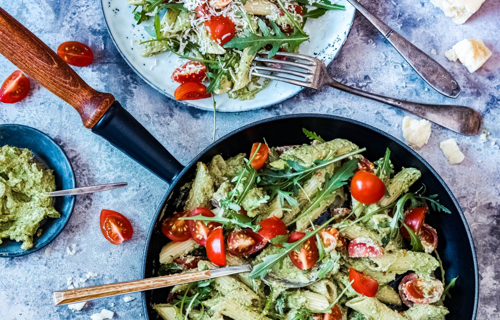

Penne met avocadopesto

ingredienten
- 200 g penne volkoren
- 45 g Parmezaanse kaas
- 1 teentje knoflook
- 2 rijpe avocado's
- 1 halve citroen
- 15 g basilicum
- 20 g pijnboompitten
- 250 g cherrytomaten
- 2 handjes rucola
h2>bereiding
- Kook de penne volgens de aanwijzingen op de verpakking.
- Rasp de Parmezaanse kaas. Pel en pers de knoflook.
- Halveer de avocado's en verwijder de pit. Schep het vruchtvlees in een keukenmachine en voeg ook de
Parmezaanse kaas, het sap van de halve citroen, de basilicum, de pijnboompitten, de knoflook en een
flinke snuf peper en zout toe. Meng tot een romige pesto.
- Snijd de tomaatjes in vieren.
- Roer de avocadopesto door de penne en verdeel over twee borden. Maak af met de tomaatjes, rucola en
eventueel nog wat extra Parmezaanse kaas.